OUM |
Technique Overview |
||
Method Navigation |
Current Page Navigation |
||
|
|
||||||||
The purpose of this technique is to provide assistance in understanding the role instrumentation can play in information gathering for the purpose of making improved business decisions, as well as in measuring the amount of business value generated through the IT strategy. The technique presents some of the core planning exercises necessary to enable an organization to measure business value generated through SOA projects. By measuring IT business value through IT, organizations will be armed with the information necessary to make better Business and IT decisions necessary to improve business value. Further, the technique demonstrates how instrumentation can be utilized to not only instrument IT based processes and strategies, but also provide support for business metrics based on business objectives.
If an organization wants to improve the amount of business value generated through IT, they must first establish a strategy for measuring the business value generated through the solutions managed and delivered through IT. Measuring generated IT business value is important because it provides the basis for improvement. Many projects are justified against various business goals. But how many actually provide and fulfill those goals? If the organization does not establish a system to validate that the project has been successful with respect to concrete evidence, then one can never be totally sure.
SOA brings the promise of a more robust, extensible, and agile IT organization, but there has been an increasing amount of scrutiny given to the effectiveness of the SOA strategy in general. This scrutiny has been brought upon, for the most part, by the common failures of organizations attempting to adopt SOA. Typically, these failures are not the fault of the strategy itself, but the way in which organizations go about adopting it. For instance, a fundamental promise of SOA is its resiliency to support change. However, many organizations do not develop the necessary standards and patterns necessary to support change, such as a consistent versioning strategy for services. Simply stated, just because an organization indicates that they are utilizing SOA, does not mean they get all the benefits for free; they have to build their SOA correctly. Simply building web services is not applying SOA.
The benefits however, are there for those that go about it the right way. For instance, consider a lending firm that deals in mortgages, car loans, personal loans, etc. The firm has been broken into divisions supporting each of the different types of lending operations they deal in. In applying their SOA, they have developed a number of core services that support the lending business regardless of division. In particular, the Credit Check service is used across all divisions of the business. The organization took the time, prior to developing shared services, to develop a strategy for handling unforeseen changes necessary to IT services, and therefore implemented a basic versioning strategy for their services. At some point in time, the government introduced new regulations with respect to credit scoring which would require some minor adjustments to the way credit scoring is conducted from a technical standpoint. Because the organization developed a versioning strategy, they were able to make the change to a new version of the Credit Check service and migrate the existing consumers to the new service without requiring any change or work on their part.
Clearly, there was a great deal of business value generated by this approach. For instance:
Now let’s examine the result if the organization was applying SOA, however they did not take the time to design for change, and therefore did not implement a consistent versioning strategy. In this case, when the new regulation came down the following would have been the experience by the business:
In this scenario, the result of requiring a change to a service was dramatically different across two different SOA strategies. The first scenario got it right, at least from a design for change perspective, and the second was left wondering why they even went down the path of SOA in the first place. In fact, I think the argument is pretty clear, even though the second organization believed they were doing so, the truth is, they were not.
The example does lead to an important point however. If both organizations were measuring the business value generated by their IT initiatives effectively, the second would have most definitely understood that there was a problem with their SOA strategy, and the first would have significant evidence supporting their SOA cause.
In order to measure IT business value effectively, organizations must first estimate the business value expected from an initiative prior to undertaking the project. Once, delivered, they need to measure and validate the results against expectations. In the case of the second scenario, the project delivery clearly would not have measured up against the expected results. This would have clearly pointed to problems in the strategy, which when corrected, would lead to increased business value for future endeavors.
Further, the ability to determine the root cause of the problem with respect to the IT strategy will provide reassurance to the business that the problem can be corrected and better results can be expected in the future. If no strategy involving estimating, measuring and validating IT business value is in place, the perception of the IT business will be left to gut perception, rather than backed by hard evidence (either positive or negative).
Business Value Measurement – The Business Value Measurement is twofold:
No. |
Step | Component | Component Description |
|---|---|---|---|
1 |
Establish the criteria and foundation for measuring business value. | Measuring Criteria and Foundation | The Measuring Criteria and Foundation contains the categories against which the customer plans to classify business value estimates. It also includes what should be the common business value unit, such as for example the local currency of the enterprise’s headquarters. Finally, the component includes for each category, a list of all the business values the enterprise wishes to measure against. |
2 |
Establish a standard for estimating business value for projects. | Projects Business Value Estimation Standard | The Projects Business Value Estimation Standard includes a standard on how to estimate business value for a project. This standard should be applied for all projects that are considered for execution, and should be an estimate on the positive impacts the solution should produce for the business, and weighing that against the expected total cost to realize the solution. This business value estimate should be used as an input in the projects justification process. |
3 |
Establish standards for a baseline business value measurement. | Business Value Baseline Standards | The Business Value Baseline Standards include standards on how business value measurement baselines can be determined in various types of scenarios. |
4 |
Establish standards for performing a business value analysis for the project delivery process. | Project Delivery Business Value Analysis Standards | The Project Delivery Business Value Standards describes standardized processes for determining business value for services as part of the project delivery process. |
5 |
Determine conceptual business value instrumentation data. | Conceptual Business Value Instrumentation Data | The Conceptual Business Value Instrumentation Data contains all the entities, attributes and relationships that are relevant for Business Value Instrumentation. It shows where the Business Value should be stored, and at what point during the process it should be stored. |
6 |
Determine SOA business value metrics. | SOA Business Value Metrics | The SOA Business Value Metrics component contains all the metrics that you will require to calculate the business value of projects and services. |
7 |
For each project, estimate a business value. | Project Business Value Estimate | A Project Business Value Estimate is created for each individual project. This is an estimate on the projects total business value calculated using the earlier established standards for business value estimation. |
8 |
At the start of each project, establish a business value baseline. | Project Business Value Baseline | A Project Business Value Baseline is created for each individual project. This is an actual measured business value baseline for the project that has determined based on the earlier established standards for business value baseline measurements. |
9 |
For each project, implement the business value measurements. | Business Value Measurements Implementation | A Project Business Value Measurements Implementation is created for each individual project in order to enable reporting on the achieved project or services business value. |
10 |
Measure the actual results. | Business Value Measurement Results | For each project, a Business Value Measurements Results provides the actual business value that is achieved by the project or services in the common business value unit that is used in the organization. This can be used to compare achieved business value between different implemented projects and services throughout the organization. |
| 11 | Validate and analyze the results. | Validated Business Value Measurements | For each project, a Validated Business Value Measurements analyzes the actual business value compared to the estimated business value to see what may have caused the differences between estimated and actual value. |
Measuring SOA IT Business value goes beyond the project delivery lifecycle. It is a cumulative effort that measures the overall business value generated by initiatives which are on separate delivery cycles. The model becomes slightly more complicated when you add in the concept of services, as they represent separate initiatives, with separate lifecycles, but still contribute to the overall business value equation.
One of the key aspects with respect to measuring IT Business value as it results from an IT organization utilizing SOA is determining how much business value can be attributed to the approach itself, and even at a more granular level to the point of understanding the business value resulting from each service. In general the process of measuring business value begins prior to engineering a project, and continues after a project is delivered.
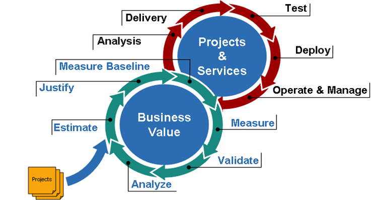
Business Value Analysis Lifecycle
Most organizations go through a process of justifying and ranking projects for delivery. Part of that exercise is doing some analysis with respect to estimating the amount of business value that will result from the project which is measured against the cost of delivering the project in addition to the ongoing maintenance costs. The estimation process represents the starting point of measuring business value, as this data needs to be validated against the estimate after the project has been delivered. Significant gaps between estimates and the measured result represent breakdown in the overall strategy and processes.
The example presented in the introduction, where the lending firm was forced to implement a change to the credit scoring functionality across the business in order to comply with new government regulations, is worth revisiting. In the case of the failed scenario, the project was probably estimated to come in with a much higher business value than what actually resulted. This was because of the false assumption that their SOA was designed to tackle change (and it was not). When results are greatly outside of expectation, changes are most likely necessary in order to prevent a repeat performance.
Projects are justified and prioritized based on analysis completed against the project estimates. The mechanism that organizations utilize to justify projects will vary based on the type of business they are in and differing business conditions. It may seem that the estimate data is not always the primary driver. For instance, government regulations that force compliance often leave little choice with respect to project priority. However, these projects do exude a great deal of business value in the area of cost avoidance, because in order to avoid the cost of being shut down, or temporarily shut down would definitely measure high with respect to business value.
Upon justification a project begins its normal delivery lifecycle. In parallel, the baseline measurements of estimated business value should be established. The baseline is necessary to measure the as is conditions with respect to business value prior to executing the project, and if possible, should be measured in a way that is consistent with the measurements that will be taken after delivery. In some instances this is not always possible.
Since the formal identification and discovery of services has not yet taken place, their contribution with respect to business value needs to be updated during the project and service delivery lifecycles. The effect of the service oriented approach should already be included in the estimate, but at a much higher level. During project delivery, the establishment of individual contributions to business value by services should be more formally documented.
Once the project and service delivery lifecycles have completed for a project and the project has been deployed into the operational environment, the remainder of the business value analysis cycle can complete. This begins with measuring the actual results observed post deployment. This step begins to collect data with respect to changing business value conditions based on the criteria set forth in estimating the project’s value. Some conditions can be measured immediately, and others may take a significant amount of time before meaningful data can be interpreted.
As business value is measured, it should be validated against the estimates using the baseline measurement data. Any significant gaps representing less than expected observed business value in the data are areas of concern. Further analysis would then be undertaken to attempt to understand why the gap exists and what needs to be done to correct it.
There are many different areas which enterprises will measure business value against. The specific set will be unique for pretty much every enterprise as they operate in different business conditions, geographies, and under different business objectives (both short and long term). However, most organizations will classify business value under the following categories:
The ideal approach would be to classify business value estimates against these categories, and then convert to a common business value unit. In particular, the most generic business value unit would be the local currency of the enterprise’s headquarters. This can be a painful and complicated process, that not every organization may be willing to undertake, but it does provide meaningful benefits once an organization because proficient in the exercise.
Avoiding the conversion to currency does not prevent an organization from measuring business value. However, the organization should be consistent with the units they use for each specific type of business value calculation under each category. For instance, in the Head Count Management category, all business value calculations should be in the same units. If not in the local currency, then in something such as savings in hours, or days, and should probably include the type of employee where the savings are taking place. This is simply because the average salary of different grades of employees will vary across the enterprise (e.g.: Saving a receptionist 4hrs a day may not be as valuable as saving an engineer 4hrs a day).
Note: The inspiration for this section came from David Sward’s book titled: Measuring the Business Value of Information Technology: From Intel Press. This book provides a good foundation for estimating and measuring business value from IT solutions. However, it does not consider the nuances of utilizing a SOA approach. Extending the method for SOA is the primary subject of this section in addition to the next six sections.
The following business values fall under the Head Count Management category:
If monetary value is not going to be the unit of measure for this category, then typically a unit of time (such as days) can be used for each. The type of category of employee should also be specified, as not all fit within the same salary bands.
The following business values fall under the Expense Avoidance category:
Typically, the only logical choice for measuring these values is in the local currency.
The following business values fall under the Revenue Increase category:
Typically, the only logical choice for measuring these values is in the local currency.
The following business values fall under the Working Capital category:
If monetary value is not going to be the unit of measure for this category, then typically a unit of time (such as days) can be used for each.
Project business value estimation will vary from organization to organization, but in general, the process typically involves estimating the positive impacts the solution should produce for the business and weighing that against the total cost to realize the solution. This information is typically the basis that organizations work against for justifying and prioritizing projects, and in some organizations the process is highly competitive among different business units, especially when they are competing for budget assignments.
Regardless of the detailed approach taken, a best practice is to set standards with respect to the measured business value and establish consistency in the way projects are estimated with respect to cost and benefits. That way, the enterprise is better able to look at the set of proposed projects in a more level playing field, rather than being simply swayed by the negotiation skills that one or more organizations may have over others.
Traditionally, organizations have been responsible for putting forward project proposals and the estimates of business value in addition to the estimated project costs. This approach is not totally effective with the utilization of an SOA IT Strategy. The reason being that individual organizations do not necessarily have the visibility into the shared service catalog that may span the enterprise, and therefore have no way to effectively understand what cost savings they may be able to realize through the reuse of shared services.
The following process represents the high-level steps that may be utilized to deliver an estimate with some level of accuracy (from the perspective of utilizing SOA), in addition to ensuring that the proposal is delivered with consistent information so it may be considered equally against competing projects.
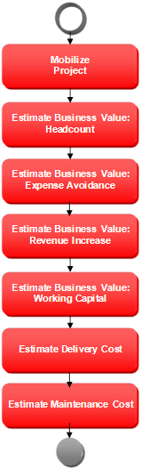
Project Business Value Estimation Process
Mobilize Project: This activity simply represents the set of tasks necessary to get a project off the ground, such as gathering high-level requirements, and bringing together the necessary resources required to support the estimation and justification process.
Estimate Business Value – Head Count: This task involves estimating any head count related business value that should be realized via the realization of the project (if any). Each type of benefit classified under the Head Count category should be itemized, and evaluated using a consistent set of units, such as the local currency (if possible), or in the case of head count, person hours, days, weeks, etc. The units used, should be predefined by the enterprise, that way each organization will produce the estimate in a consistent set of units. If a unit other than currency is used for head count business value, then the unit should be classified by the class or band of employee affected. The following benefits fall under the Head Count category:
Estimate Business Value – Expense Avoidance: This task involves estimating any expense avoidance benefits that should be realized via the realization of the project (if any). Each type of benefit classified under the Expense Avoidance category should be itemized, and evaluated using the local currency of the enterprise’s headquarters. The following benefits fall under the Expense Avoidance category:
Estimate Business Value – Revenue Increase: This task involves estimating any revenue increasing benefits that should be realized via the realization of the project (if any). Each type of benefit classified under the Revenue Increase category should be itemized, and evaluated using the local currency of the enterprise’s headquarters. The following benefits fall under the Revenue Increase category:
Estimate Business Value – Working Capital: This task involves estimating any working capital related benefits that should be realized via the realization of the project (if any). Each type of benefit classified under the Working Capital category should be itemized, and evaluated using the local currency of the enterprise’s headquarters. If the local currency cannot be utilized to measure the business value of each type of business value, then a consistent unit, such as days, should be utilized. The following benefits fall under the Working Capital category:
Estimate Delivery Cost: Estimating delivery costs should first begin with the normal estimation processes. However, once completed, an SOA or Enterprise Architect should be engaged to gain an understanding of the project requirements and provided guidance with respect to any shared services that may be reused by the project. In the event that shared services have been identified, the project estimate should be revised with the expected savings from reuse. It is a good practice to call this out separately in the estimate.
Estimate Maintenance Cost: Maintenance costs are incurred on an ongoing basis once the solution has been delivered into its operational environment. In the event of reuse observed through the project, maintenance costs may be impacted positively as less hardware and software may be required to maintain the solution (meaning potentially less support cost). If this is the case, the SOA/Enterprise architect should assist with this estimate.
Note: Reuse savings are not actually assigned to individual services until after reuse instances have been validated during Service Analysis. They are estimated here because they may play a potentially large role in project justification. In the event that a service that was estimated for reuse savings is not a viable candidate, the estimate should be revalidated prior to the project continuing with delivery efforts.
An example project estimate is included below:
Example: Project Business Value Estimate
The project justification process takes all projects that are currently being proposed into consideration. Most organizations simply do not have the bandwidth to proceed with every project, nor the budget to do so. Further, in some cases, a project may not demonstrate enough business value against the cost of realization, to be considered for approval. There are some high-level components that should be considered in every project justification process. The high-level process is illustrated below:
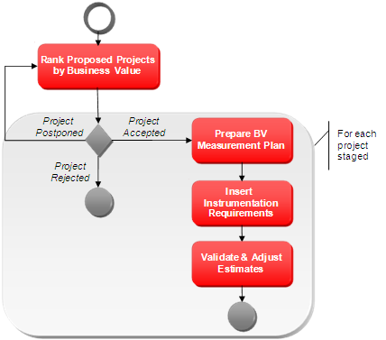
Project Justification Process
Rank Proposed Projects by Business Value: This task assumes that projects have put forward a consistent business value estimate (detailed in the previous section) which allows each project to be justified and ranked on an even playing field. Each project is postponed, rejected or accepted. Those projects that are accepted will proceed through the remainder of the process.
Prepare Business Value Measurement Plan: It is important to establish the measurement plan early on because it may actually influence the requirements for the project. The measurement plan provides a high-level plan with respect to how current state measurements are going to be collected, in addition to the way measurement data will be collected post delivery. The main goal of the plan is to validate that the estimate is relatively accurate with respect to actual measurable results. In many instances, the measurement plan will need to be executed over an extended period of time before all elements of the estimated business value can be validated.
Insert Instrumentation Requirements: This step is based on the results of the measurement planning tasks. In this step, analysis is completed to determine if any of the measurement plan can be instrumented through the use of technology and bundled with the project. For instance, simply recording revenue observed through the solution may assist with determining the amount of increased revenue observed. Any instrumentation which can be automated as part of the delivery should be allocated in the form of requirements for the project.
It is a good practice for projects to consider their eventual retirement as part of the measurement plan, and include instrumentation for other possible business value measurements which may not yet be considered for the project. This will also allow unexpected business value changes to be observed as a result of the project.
Validate & Adjust Estimates: This step revalidates the cost estimates for the proposed solution if any additional requirements have been added for the purpose of business value instrumentation.
Measuring baseline business value is the process of establishing the business value observed by the organization prior to deploying the solution. The baseline measured must be directly related to the estimate for the new solution. For instance, if the estimate states that 400 hrs/year of loan consulting will be reduced by the solution, then the current level of yearly loan consulting should be established in order to later validate the estimate.
In many cases, establishing the baseline can be a difficult process, especially when employee productivity needs to be measured. There are a number of books and papers available on the subject of measuring employee productivity and others that can be consulted for the purpose of establishing and executing measurement plans.
In general there are three primary approaches that organizations use to establish baseline measurement data, and in many cases a combination of all three may be employed:
One final point to make about the baseline collection is that the collection of baseline delivery and maintenance costs without assuming reuse needs to be established. This will allow the organization to understand the delivery cost savings observed by utilizing the SOA strategy from a reuse perspective, which is part of the Expense Avoidance category.
Business value analysis continues into the actual project delivery activities when an SOA is in place. This is necessary because the estimated business value for individual services needs to be allocated at the time of identification and discovery and the actual delivery costs need to be recorded upon delivery completion.
Since services are identified for realization, or discovered for reuse, during Service Identification and Discovery, business value analysis must be conducted individually against each instance of service reuse, or realization. This allows the organization to establish the amount of business value to be provided by each individual service separately. This is important, because many organizations simply believe that the only real business value stemming from their SOA is cost savings from reuse. Reuse, does create the foundation, but the function provided by shared services, provides some, or all of the same business value back to the consuming application over and over again upon each instance of reuse.
For example, an internet travel planner executed a project a couple years back where they provided a route planning service, where customers booking a rental car through their online portal, could plot a road trip and print the appropriate maps and routes. The project was justified against revenue increasing vendor of choice benefits, and has proven to be successful. During the project delivery, IT delivered the map route calculation engine as a shared service. They determined that the route calculation engine service was worth approximately 90% of the vendor of choice benefits realized. To date, the organization has measured an increase of revenue of approximately $15,000 per year resulting from the solution, which results in approximately $13,500 allocated to the route calculation engine service.
Due to the success of the trip planning service, the organization has recently undergone a similar service for developing hiking and biking trail route maps for customers booking through their services, which provide additional vendor of choice revenue benefits. During analysis, the organization realized that the same map plotting engine could be extended to work for the hiking and biking route planning capabilities. This service again provided about 90% of the vendor of choice benefits, and was evolved without impacting the other project consuming the service. In this scenario, the reuse of the map route calculation service provided reuse savings of approximately $85,000 from project delivery expenses, and approximately $8,000 per year in maintenance. Further, the functionality provided by the service was responsible for delivering 90% of the vendor of choice benefits realized by the project, which resulted in an additional $6,500 in measure revenue increase per year.
Therefore, the service provides the following business value back to the business:
Area of Savings |
One-Time Business Value |
Yearly Business Value |
|---|---|---|
| Reuse Delivery Savings | $85,000 |
|
| Reuse Maintenance Savings | $8,000 |
|
| Vendor of Choice Revenue | $20,000 |
Therefore the service is responsible for approximately $28,000 of business value per year, in addition to the reuse savings of $85,000 organizations typically understand as being the only direct SOA benefit. The estimation should extend out, as many yearly based returns diminish over time.
The high-level impact to the Service Analysis process with respect business value instrumentation is provided below.
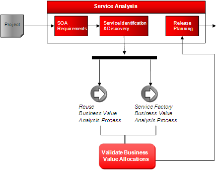
High-Level Service Analysis Process
As mentioned earlier, one of the key elements that organizations overlook is the allocation of actual business value to individual services. The process varies slightly depending on whether a service is being discovered, or identified as either new or to be extended. The funding model also plays a role on how business value and delivery costs are allocated for new or extended services.
The Reuse Business Value Analysis Process is covered first (below), followed by the Service Factory Business Value Analysis Process.
Validate Business Value Allocations: After Service Identification and Discovery is completed a validation step is taken to ensure that exactly 100% of each business value estimated has been allocated between project, reused services, and service candidates scheduled for realization. Since during service identification and discovery each reuse and realization candidate is examined individually, a cross check mechanism is important. This cross check ensures that all of the business value has been properly assigned, in addition to avoiding the case where more than 100% of the business value for any particular item has been allocated.
The process flow is illustrated below:
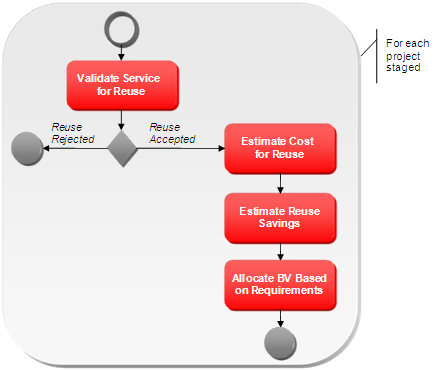
Reuse Business Value Analysis
Validate Service for Reuse: This is simply a carryover of the steps required as part of the Service Discovery process, where the service is either validated for reuse, or rejected (see the SOA Service Identification and Discovery technique for details). If a reuse candidate is rejected, obviously no action is taken. When a reuse candidate is accepted however, the business value analysis needs to be undertaken.
Estimate Cost of Reuse: This task involves estimating the cost that will be incurred by the project for reusing the service. This includes additional delivery work, in the event that the service does not meet all requirements initially estimated and any work that may be required to integrate the service. Additionally, any maintenance costs that the project will incur while reusing the service should be estimated. In some sense, an established funding model must already be in place with respect to reuse and development cost models for the organization’s SOA.
Estimate Reuse Savings: In this task the amount of delivery savings is estimated. To do this, analysis is done against the actual requirements fulfilled by the service and the measurement is taken against the time required to delivery these requirements by the project team. Additionally, any maintenance savings should be established. If the service will off-load a significant amount of bandwidth that can still be consumed by the service’s hosting hardware, then there may be significant savings with respect to hardware and software maintenance required by the project. This may be offset by the reuse costs however, depending on the cost model adopted by the organization.
Allocate Business Value Based on Requirements: This step involves analyzing the business value estimate provided for the project against the actual requirements that will be realized through the service. A percentage of each applicable business value item should be allocated to the service. When the service analysis phase completes, 100% of the business value should be distributed between project, services to be reused, and service candidates justified for realization. Percentages are used because they work well against a potentially changing estimate, as well as can be sustained over measuring actual values upon deployment. This allows the organization to measure business value on a project by project basis, and have the correct allocations provided to services based on the project business value data.
This process handles the allocation of business value for service candidates when they are justified for realization. The process can vary based on the types of funding model an organization employs, which are represented by two separate paths through the process. Customization of this process is expected for most organizations to hand the subtle differences they may have with respect to project and service funding. The process flow is illustrated below:
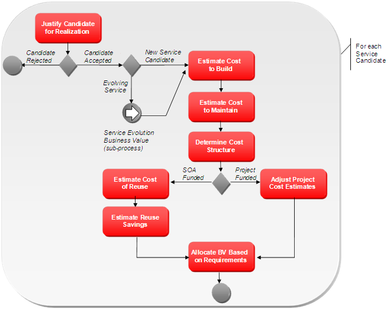
Service Factory Business Value Analysis Process
Justify Candidate for Realization: This is simply a carryover of the steps required as part of the Service Identification process, where the service is either justified for realization, or rejected (see the SOA Service Identification and Discovery technique). If a service candidate is rejected, obviously no action is taken. When a candidate is accepted however, the business value analysis needs to be undertaken for the candidate.
Service Evolution Business Value (Sub Process): When an existing service is going to be extended with new requirements to support a new consumer or set of consumers, the process for allocating business value changes slightly. There are additional steps that need to be taken to analyze business value for this scenario. The details of this sub-process are provided in the next section.
Estimate Cost to Build: This step involves the estimation of the delivery costs to realize the allocated requirements as a shared service, or extend the existing service with the new requirements. Typically, at least in the case of a new service candidate, there is more work involved in creating a shared service than would be required if the requirements were to be hard wired into the project delivery (e.g.: adhering with the versioning strategy and other standards enforced across shared services).
Estimate Cost to Maintain: This step involves the estimation of maintenance costs for the service candidate once deployed in to the operational environment. In some cases, if the service will be deployed in an existing environment with no additional software or hardware bandwidth required, the maintenance cost is minimal. However, there is almost always some additional human resource required to maintain any new software asset once delivered into production, and an estimate should be provided.
Determine Cost Structure: There are two basic cost models established with allocating delivery costs for new or evolving shared services. One is that the delivery of shared services is funded by a separate SOA service factory budget (SOA Funded), and the other is that the first project to need the service or extend the service will be responsible for funding the delivery (Project Funded). In the event of a SOA Funded model, the business value allocation is very similar to the reuse analysis process, where the reuse cost is established, in addition to estimating reuse savings. In the Project Funded scenario, the project delivery and maintenance estimates are adjusted to absorb any additional costs necessary to deliver the requirements in a shared manner.
Estimate Cost of Reuse: This task is executed in the SOA Funded model only. This task involves estimating the cost that will be incurred by the project for reusing the service, since delivery costs are funded outside the project’s scope. This included only the additional delivery work, in the event that the service does not meet all requirements initially estimated and any work that may be required to integrate the service (not the work to deliver the service itself). Additionally, any maintenance costs that the project will incur while reusing the service should be estimated.
Estimate Reuse Savings: This task is executed in the SOA Funded model only. In this task the amount of delivery savings is estimated. To do this, analysis is done against the actual requirements fulfilled by the service and the measurement is taken against the time required to deliver these requirements by the project team. Additionally, any maintenance savings should also be established. If the service will off-load a significant amount of bandwidth that can still be consumed by the service’s hosting hardware, then there may be significant savings with respect to hardware and software maintenance required by the project. This may be offset by the reuse costs however, depending on the cost model adopted by the organization.
It is important to note, that if the Service Candidate is a new candidate (not an evolving service), then the reuse savings for the originating project is always $0. This is because the requirements are still required to be built from the ground up, and the funding is coming fresh from either the project of the SOA. In the case where a service is being evolved, there may be some reuse savings, as some of the requirements may already be realized in the existing version of the service. These requirements represent reuse savings and should be counted.
Adjust Project Cost Estimates: This task is performed for the Project Funded model only. Here any additional cost estimates for maintenance and delivery required to realize the allocated requirements as shared services needs to be adjusted against the project’s estimate. If the combined updates to the project estimate incurred by realizing shared services are significant, the project may need to be revalidated against business value before proceeding onto project and service delivery.
Allocate Business Value Based on Requirements: This step involves analyzing the business value estimate provided for the project against the actual requirements that will be realized through the service. A percentage of each applicable business value item should be allocated to the service. When the service analysis phase completes, 100% of the business value should be distributed between project, services to be reused, and service candidates justified for realization. Percentages are used because they work well against a potentially changing estimate, as well as can be sustained over measuring actual values upon deployment. This allows the organization to measure business value on a project by project basis, and have the correct allocations provided to services based on the project business value data.
Service Evolution Business Value Sub-Process
Services have a legacy of consumers, and the longer they exist, the more likely they are to have an increased number of consumers. When a service is to be evolved it may have a ripple effect, positively or negatively, across the projects that are currently consuming the service.
In the credit check example provided earlier regarding a new government regulation involving credit scoring this affect is clearly noticeable. In the scenario where a versioning strategy was not employed, the cost of the solution was significant, and therefore had a lower business value output in relation to its cost because of this reason. In the successful scenario, however, one of the true values of a correctly adopted SOA came to light. The single service for delivering credit scoring provided a highly valuable means to comply with the new government regulations consistently across the entire organization by evolving the service in a single engineering event.
The sample analysis for credit scoring conformance project is provided below:
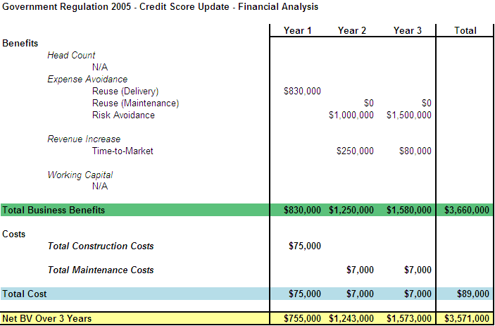
Example: Credit Score Compliance
Clearly, this project is easy to justify, and in the scenario where the credit scoring service can be easily evolved, the actual value provided through the SOA’s ability to change is substantial, not only from reuse savings in delivery, but through the realization of business value that relates directly to the business’s bottom line.
The Service Evolution Business Value Sub-Process is illustrated below:
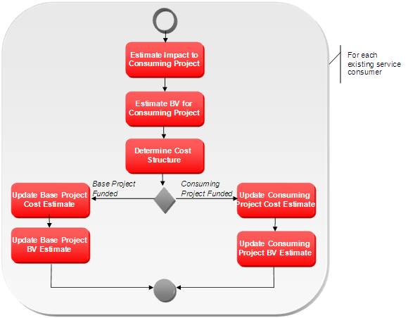
Service Evolution Business Value Analysis Process
This process iterates over each project that is already consuming the previous service version within the operational environment.
Estimate Impact to Consuming Project: This task involves estimating the delivery and maintenance impacts the service evolution will have on the project when it is forced to migrate to the new service version.
Estimate BV for Consuming Project: This task estimates any additional business value that will be observed when the consuming project migrates to the new service version.
Determine Cost Structure: There are a couple cost structure options available in allocating costs and business value resulting from the service evolution. A Base Project Funded model indicates that the originating project will be responsible for funding the evolution of consuming projects, and will also be awarded with any net business value realized through the migration.
The Consuming Project Funded model assumes that each consuming project will be responsible for absorbing the cost of migration, and will also be allocated any net business value returns.
Update Base Project Cost Estimate: This task is only executed when the Base Project Funded model is used. Any additional delivery and maintenance costs are allocated against the base project’s cost estimate.
Update Base Project BV Estimates: This task is only executed when the Base Project Funded model is used. Any additional business value estimated to be realized by the project when migration to the new service version is complete is calculated and applied to the base project’s business value estimate.
Update Consuming Project Cost Estimate: This task is only executed when the Consuming Project Funded model is used. Any additional delivery and maintenance costs are allocated against the consuming project’s migration cost estimate.
Update Consuming Project BV Estimates: This task is only executed when the Consuming Project Funded model is used. Any additional business value estimated to be realized by the project when migration to the new service version is complete is calculated and applied to the consuming project’s migration business value estimate.
The Service Delivery activities are affected with business value tasks in two areas. The first area is on the service delivery side, where service candidates are first divided by service boundaries into one or more defined services. The service boundary analysis is part of the service definition processes, and when one or more service boundaries are identified, then the service candidate will be realized as two or more shared services. In this event, the business value and delivery costs allocated to the service candidate (see Service Analysis above) needs to be divided across the individual services that will be realized from the service candidate.
Finally, as project and service delivery completes, the actual service delivery and project delivery costs can be measured.
The high-level Service Delivery processes with the effects of Business Value analysis is depicted below:
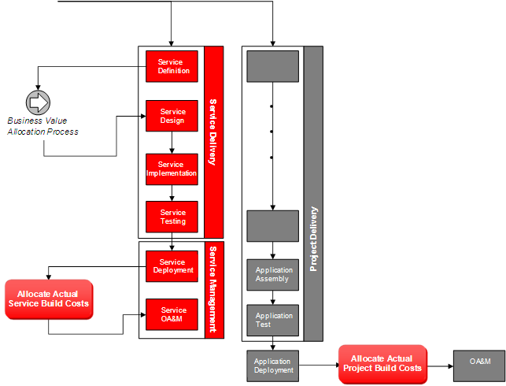
Project and Service Delivery High-Level Process
Business Value Allocation Process: This process is covered in the next sub-section and details the effect of service boundaries on business value instrumentation.
Allocate Actual Service Build Costs: This task involves recording the actual delivery costs for each new service created or evolved resulting from the initiation of the project. The actual recording place for the information will vary based on the funding model used by the organization. In the event of the SOA Funded model, the actual delivery costs are recorded against the service’s individual project owned by the SOA service factory. When the Project Funded model is utilized, the actual data is recorded against the project’s measurement data set.
Allocate Actual Project Build Costs: This task involves recording the actual project delivery costs for the project.
The Service Evolution Business Value Sub-Process is depicted below:
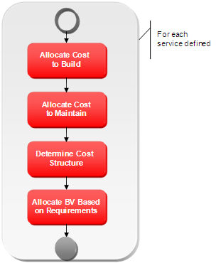
Business Value Allocation Process
Allocate Cost to Build: This task involves allocating the portion of delivery costs estimated to deliver the originating service candidate to the specific service now that it has been defined.
Allocate Cost to Maintain: This task involves allocating the portion of maintenance costs estimated for the originating service candidate to the specific service now that it has been defined.
Determine Cost Structure: This task involves updating the delivery and maintenance expenses to the correct estimate based on the funding model applied.
Allocate BV Based on Requirements: This task involves allocating the percentages of the business values that have been allocated to the service candidate, to the individual services themselves. For each business value item, the total amount of business value (nothing more, nothing less) allocated to the candidate must be distributed completely across the services originating from it.
For example, if a service candidate is allocated 90% of the Vendor of Choice business value item, and has two service boundaries defined. The following is a valid distribution of the Vendor of Choice business value:
As it allocates the total 90% allocated to the service candidate.
The following is invalid:
This totals 100% which is 10% more than allocated to the service candidate.
Until now there has been a focus of on collecting and analyzing the business value data, but there has been no mention from a conceptual perspective as to where the data is logically stored or organized.The conceptual data model supporting Business Value instrumentation is depicted below:
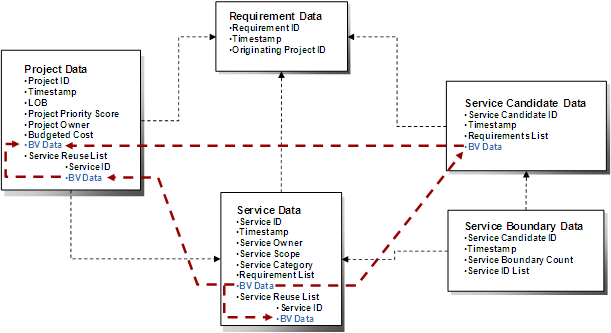
Conceptual Data: Business Value Instrumentation
The relationships of the entities identified above have not changed. The only addition is the business value data element (BV Data). The BV Data values are interconnected with respect to how they are used and populated. The work flow is as follows:
To help these concepts sink in, the route planning example presented earlier is presented below.
ABC Travel Co is an internet travel planner that has adopted an SOA IT strategy. A few years ago, the company executed a project where they provided a route planning service where customers booking a rental car through their online portal, could plot a road trip and print the appropriate maps and routes. The project estimate follows:
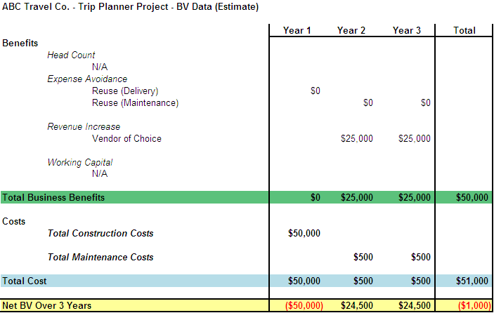
ABC Travel Co. - Trip Planner Project - BV Data (Estimate) - Initial
ABC Travel justified the project under the basis that it would only cost approximately $50,000 to deliver, and incur a very small maintenance footprint. Further, based on expected vendor of choice benefits the investment would be recovered within 3 years.
During analysis, ABC Travel identifies a potential for a shared service. The requirements for route planning pose potential for possible future reuse, and are considered strategic to this type of functionality. The RoutePlanningService is justified as a candidate, during service analysis. Another important thing to note is that ABC’s SOA funding model is SOA Funded. The estimate after Service Analysis is as follows:
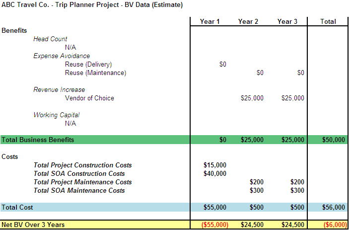
ABC Travel Co. - Trip Planner Project - BV Data (Estimate) - Revised
Because of the identified service candidate for route planning, additional costs will be experienced by the business to facilitate the construction of the shared functionality in conformance with ABC Travel’s SOA standards (e.g.: Versioning, consumption management, etc). The added cost is expected to come in at around $5,000.
Further, since ABC Travel uses a SOA Funded model for service delivery, the service delivery costs will come from the SOA budget. There will be no reuse savings from this project because all of the services involved will be delivered from the ground up as a result of this project. Reuse savings are only applicable when a service can be partly or wholly reused in the project.
Therefore for an additional $5,000, ABC Travel Co is making a strategic decision in justifying the delivery of the RoutePlanningService candidate. This is not a large risk, since the break even point for the project will only move out approximately 3 – 4 months.
The Business Value Data estimate for the RoutePlanningService Candidate follows:
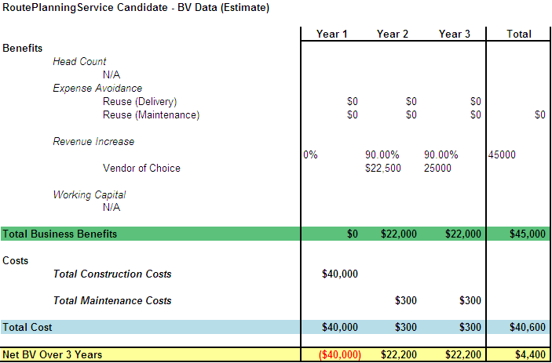
RoutePlanningService Candidate- BV Data (Estimate)
The RoutePlanningService candidate has been determined to provide 90% of the Vendor of Choice business value estimated for the project. This nets out to be $45,000 over three years. Also, as mentioned earlier, in order to realize the RoutePlanningService’s requirements in the shared environment and conform to ABC Travel’s SOA Standards such as versioning strategy, and others, an additional $5,000 is estimated. This brings the total estimate for service delivery to $40,000 which will be incurred by an SOA funded project. This value is now pulled from the original project estimate to prevent double counting.
After service definition completes on the RoutePlanningService candidate, it has been determined that a single service boundary has been defined. The candidate will be split into two services. The RoutePlanningService will be responsible for computing the actual route, but a second service called the WayPointDataService will be responsible for collecting way point data for points along the trip from a centralized map source database hosted externally to the enterprise. Therefore the business value estimate is transferred directly to the service objects. The RoutePlanningService is provided first below:
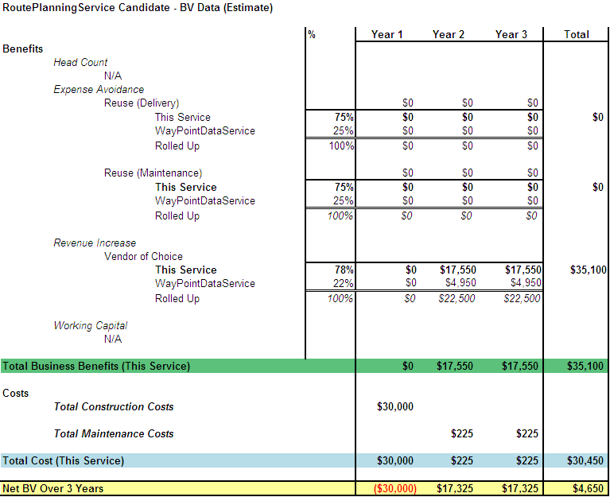
RoutePlanningService - BV Data (Estimate)
The RoutePlanningService is a composite service because it consumes the WayPointDataService. Further the WayPointDataService is not consumed directly by the Travel Planning project so its business value is calculated as a percentage of the business value observed through the RoutePlanningService. In this case, the WayPointDataService is estimated to provide 22% of the Vendor of Choice business value observed on the RoutePlanningService.
The RoutePlanningService is also responsible for 100% of the reuse benefits observed by the Trip Planner Project, which needs to be allocated to the service and its consuming services. In this scenario it has been determined that the WayPointDataService will provide 25% of the functionality, and therefore should be allocated 25% of the Reuse benefits. This nets out to $0 for both services since there is no reuse benefit realized by the project because the services are being delivered new for the project.
Since development will be broken into two services. The RoutePlanningService will consume 75% of the delivery and maintenance costs estimated for the candidate, and the WayPointDataService will be allocated the remaining 25%. Again, this nets to $0, because of the fresh delivery.
The WayPointDataService Estimate BV Data value is depicted below:
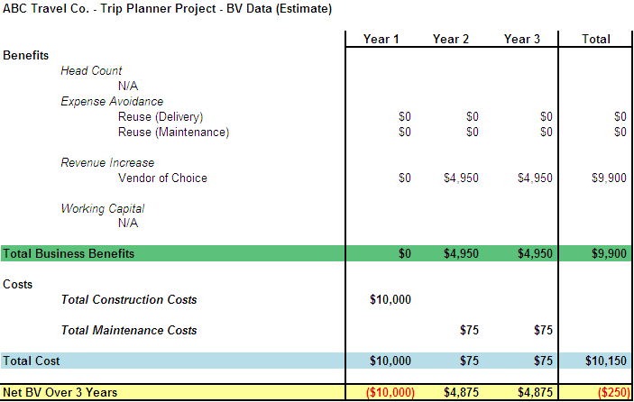
WayPointDataService - BV Data (Estimate)
From the previous analysis the WayPointDataService receives 25% of the original delivery budget for the service candidate, therefore receiving $10,000 in estimated delivery costs. The same 25% is applied for the maintenance cost.
Finally, the WayPointDataService inherits the calculated data for its business value from the RoutePlanningService. This is the same thing that happens to the RoutePlanningService, however the RoutePlanningService pulls its base business value data from the consuming project. As additional projects consume the RoutePlanningService, the inherited business value will change.
The final project estimate is included below:
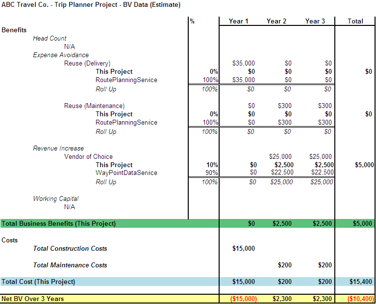
ABC Travel Co. - Trip Planner Project - BV Data (Estimate) - Final
Now is a good time to compare the results between the SOA and Non-SOA approaches, which are included in the illustration below:
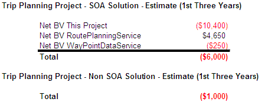
ABC Travel IT Summary After Route Planning Project
Let’s assume that the project completed as expected on time and on budget, and the expected business value was observed from vendor of choice. Clearly, ABC Travel made an investment in realizing the RoutePlanningService which added an additional $5,000 cost to the project. If the company had simply taken a non SOA approach they would have saved the additional delivery costs necessary to realize functionality as a shared service.
Another year has past, and ABC Travel has decided to undertake another project. In this project they want to provide a hiking/biking trail planning service for customers booking through their portal. The project estimate, which does not take SOA into account, is included below:
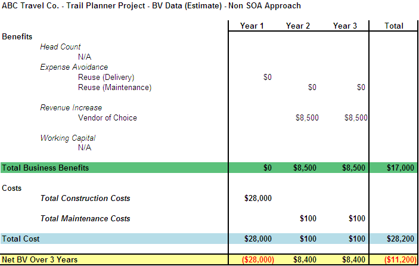
ABC Travel - Trail Planning Project - Non-SOA Estimate
Similar to the other project, investment and some risk would be required before ABC Travel could bring this new capability to the market place. However, when involving an SOA Architect from the SOA program during the project estimation, it is determined that the project can utilize the RoutePlanningService previously created for the Trip Planning project. This will also bring some significant Time-to-Market benefits because there is rumor that a competing vendor is working on a similar solution. The SOA based solution estimate is provided below:
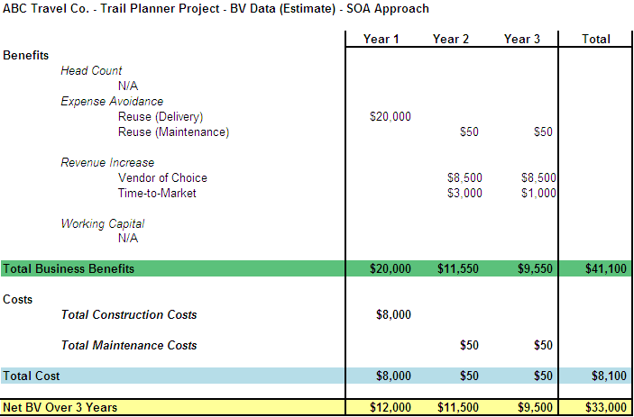
ABC Travel - Trail Planning Project - SOA Estimate
The decision to adopt and SOA strategy is beginning to look like a really wise investment now. Not only will ABC Travel be able to use its previous investment to harvest additional vendor of choice revenue, but it will also be able to beet its competition to the market place. The completed estimates, including the services is included below, starting with the RoutePlanningService:
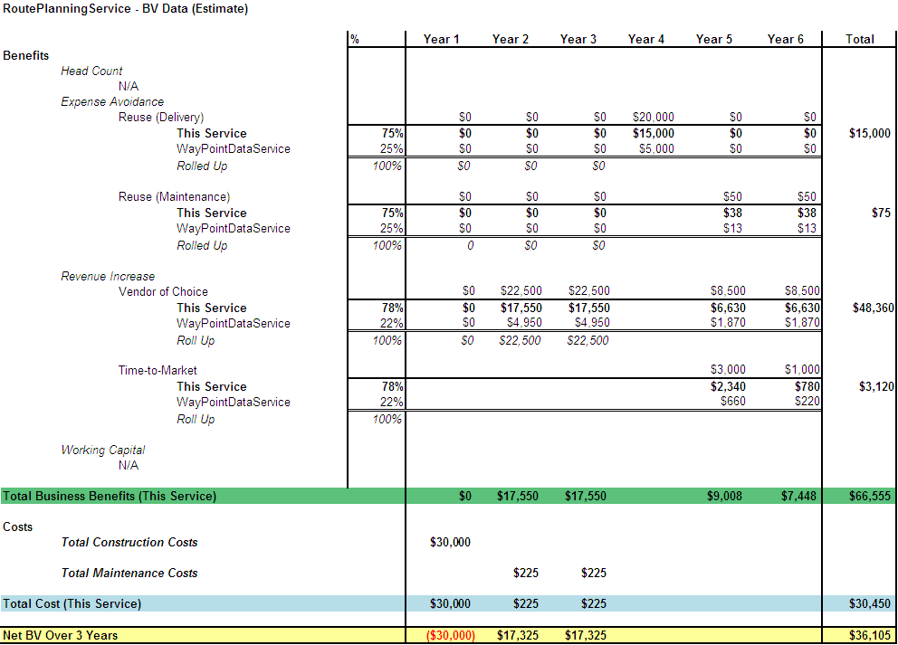
RoutePlanningService - BV Data - Revised
Clearly this service is set to pay off after just a single additional reuse instance. The WayPointDataService is presented below:
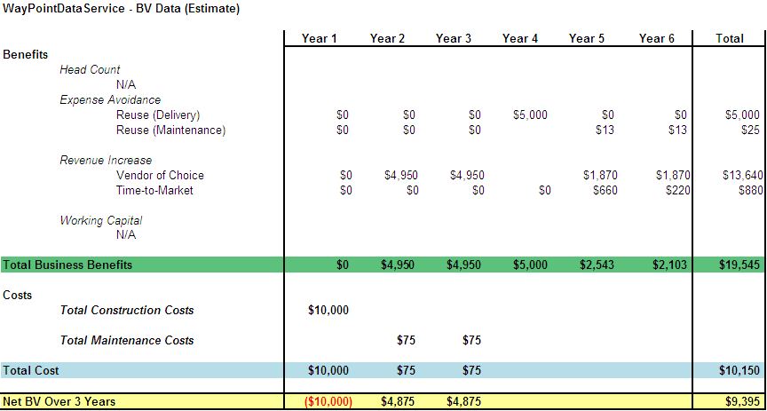
WayPointDataService - BV Data - Revised
The final BV Data estimate for the Trail Planning project follows:
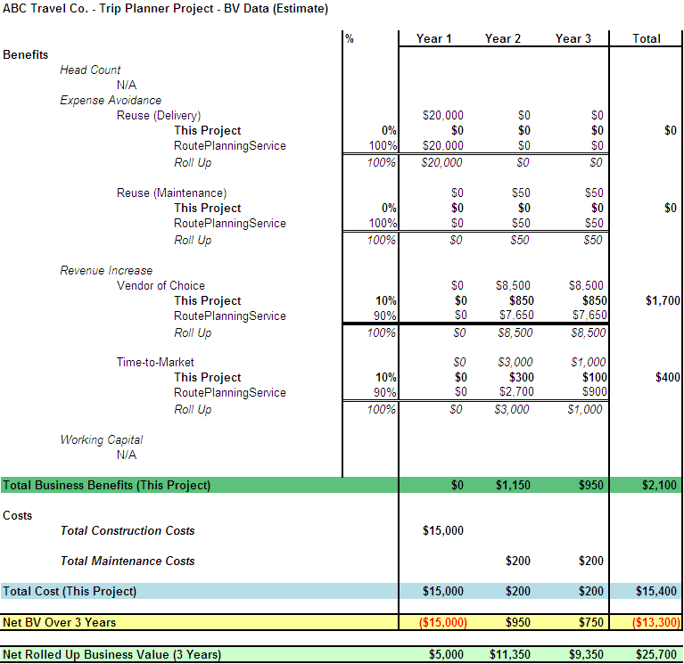
ABC Travel - Travel Planning Project - BV Data - Final
This project demonstrated a potential for $25,700 in Net Rolled-Up Business Value, the bulk of the business value from this project was realized by utilizing an SOA program.
Finally, assuming the estimates came out to be accurate; the business value generated by ABC Travel’s IT program is depicted below:
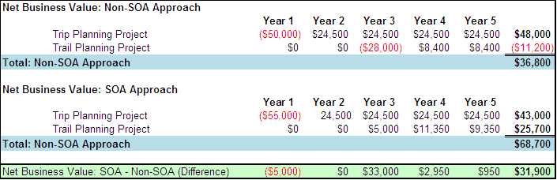
SOA vs. Non-SOA Comparison for ABC Travel Co. - Example
Clearly, there is some demonstrated business value that is directly related to the SOA program itself that is more than just savings based on delivery costs provided through reuse. ABC Travel Co would not have been able to realize the Time-to-Market benefits with the traditional approach. Further, they may have had a difficult time justifying the Trail Planning enhancement had they not been able to take advantage of delivery time reuse savings.
With the additional complication of allocating business value to individual services, the amount of work required to validate may be considered to be a little overwhelming. This is why it is recommended to allocate percentages to actual services rather than concrete numbers. That way, only measurements for the base projects need to be captured, and the services themselves can simply calculate their business value based on the assigned percentages. Further, in many cases, engineering can be put in place to automate these processes; provided consistency is adhered to throughout the business value analysis processes, and the data is collected and stored in a place such as an enterprise repository where computations on business value can be completed.
The infrastructure available to develop SOA enabled applications has come a long way, and in many cases can be used to collect business metrics in a manner that is as least intrusive as possible. Business activity monitoring can be used to determine which path through a business process is taken the most (or on average, etc). Content based capabilities in service infrastructure such as the service bus can also extract information for business value measurements.
The important key is that the appropriate plan for measuring business value resulting from the project be determined up front, and applied, where possible, as requirements to the solution for automation. Further, services that will be participating in the measurement activities need to collect their business value metric data in a consumer conscious way. That way the correct project is ensured the credit for business value realized through the use of a shared asset. This may require the engineering standards for the service to include the grouping of collected business value data by consumer ID, or any other mechanism that allows the data to be separated during analysis.
There are an extensive number of metrics that could be derived from the Business Value collected above. This section covers some of the most useful with respect to understanding business value generated by the SOA program.
In the previous documents that include metrics, the computation has been represented in a mathematical format. That format will tend to get a little bit complicated when dealing with the Business Value data, so this document will simply describe the computation, rather than illustrate it.
Purpose: This metric seems to represent the most common perception of SOA value, how much savings is the organization realizing through the reuse of shared services.
Computation: This metric totals Service Reuse business value within the sample period. Each sample is of uniform length so trend based analysis can be completed against the data.
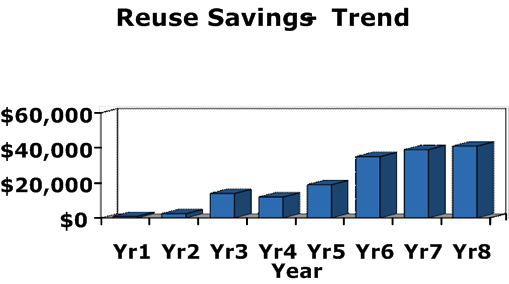
Analysis: Savings from Reuse
Interpretation: This metric does not provide the complete business value output from SOA, but it does give a snapshot on one of the most highly regarded aspects of the SOA. The foundation for realizing any type of business value comes through reuse. In the example presented throughout the previous section, positive business value, over the non-SOA approach, was not realized until the RoutePlanningService was reused at least once. But, this single reuse instance allowed for additional business value to be realized to the business through increased Time-to-Market, additional Vendor of Choice Benefits, in addition to the cost savings through reuse. The other benefits would not have accumulated if the service were not reused, therefore reuse, represents the triggering point for business value in an SOA and is therefore worthy of its own metric.
Business Value Generated By Services
Purpose: This metric provides the overall business value provided by the enterprise’s service catalog. This isolated view is a useful tool for demonstrating SOA value in the enterprise. This metric may also be used to identify inefficiencies with respect to the SOA program if the trend reverses or increase in the wrong direction.
Computation: This metric totals Service business value within the sample period. Each sample is of uniform length so trend based analysis can be completed against the data.
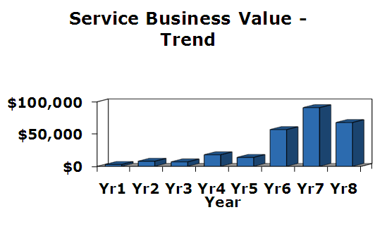
Analysis: Business Value Generated by Services
Interpretation: This metric provides the complete business value output from SOA. An increasing trend is obviously desirable. Any noticeable slowing in the trend, reversal, or increasing negative trend warrants an investigation.
Purpose: This metric provides the overall business value provided by the enterprise’s IT Program. This view is a useful tool for demonstrating IT’s value in the enterprise. This metric may also be used to identify inefficiencies with respect to the program if the trend reverses or increase in the wrong direction.
Computation: This metric totals business value within the sample period. Each sample is of uniform length so trend based analysis can be completed against the data.
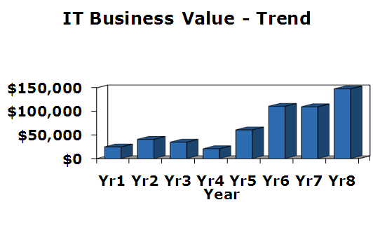
Analysis: Business Value Generated by IT
Interpretation: This metric provides the complete business value output from SOA. An increasing trend is obviously desirable. Any noticeable slowing in the trend, reversal, or increasing negative trend warrants an investigation.
Purpose: This metric provides the overall business value provided by the enterprise’s service catalog in relation to the total Business Value output through IT. This comparison based view is a useful tool for demonstrating SOA value in the enterprise in addition to understanding the percentage of SOA’s contribution. This metric may also be used to identify inefficiencies with respect to the SOA program if the trend reverses or increase in the wrong direction.
Computation: This metric totals service business value within the sample period, it also separately totals total business value within the sample period. Each sample is of uniform length so trend based analysis can be completed against the data.
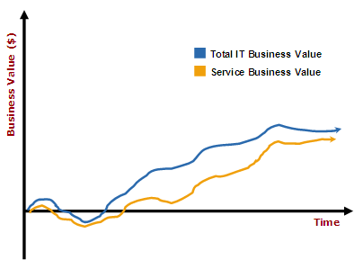
Analysis: Business Value Generated by Services vs. IT
Interpretation: This metric provides the complete business value output from SOA and plots it with the complete business value output through IT. An increasing trend is the obviously desirable. Any noticeable slowing in the trend, reversal, or increasing negative trend warrants an investigation.
Purpose: This metric provides the overall business value provided by the enterprise’s service catalog and separates the data by the Business Value categories. This isolated view is a useful tool for demonstrating SOA value in the enterprise. This metric may also be used to identify inefficiencies with respect to the SOA program if the trend reverses or increase in the wrong direction.
Computation: This metric totals Service business value within the sample period. A separate total is collected for each business value category. Each sample is of uniform length so trend based analysis can be completed against the data.
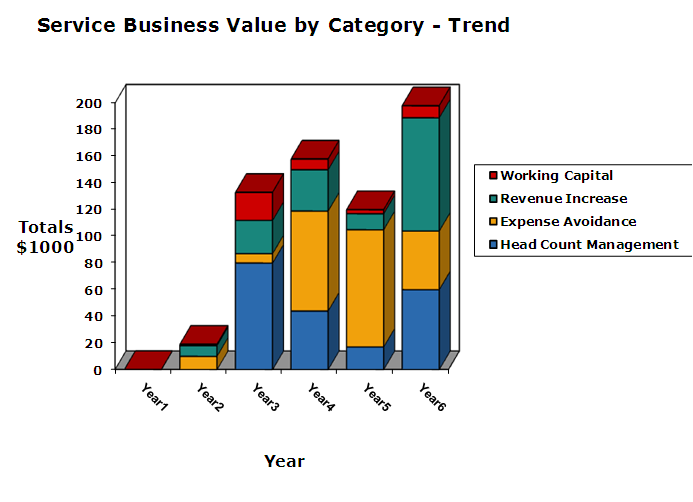
Analysis: Business Value Generated by Services (by Category)
Interpretation: This metric provides the complete business value output from SOA, but has been narrowed down by category. If an obvious bias towards one particular type of business value category is observed then further investigation may be warranted. For instance, if 98% of the business value generated by services comes from the Cost Avoidance category, it may be worth digging further to determine if those savings are completely from reuse. If so, there is probably an issue with the business value estimation process.
Purpose: This metric provides the overall business value provided by the enterprise’s IT Program and separates the data by business value categories. This view is a useful tool for demonstrating IT’s value in the enterprise with respect to specific areas of business value. This metric may also be used to identify inefficiencies with respect to the program if the trend reverses or increase in the wrong direction.
Computation: This metric totals business value within the sample period. A separate total is collected for each business value category. Each sample is of uniform length so trend based analysis can be completed against the data.
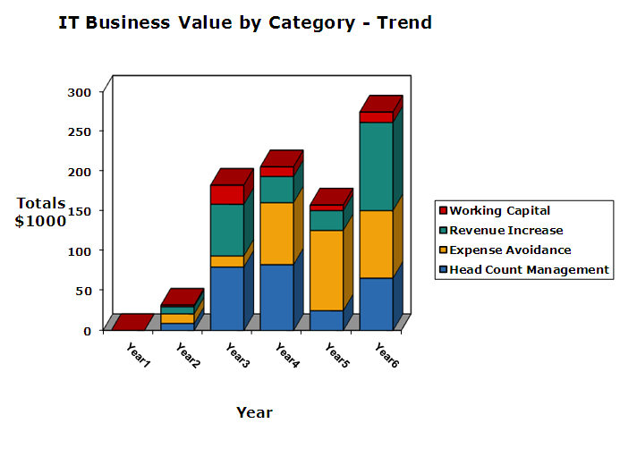
Analysis: Business Value Generated by IT (by Category)
Interpretation: This metric provides the complete business value output from SOA. An increasing trend is the obviously desirable. Any noticeable slowing in the trend, reversal, or increasing negative trend warrants an investigation. Further, any obvious bias towards any particular category warrants a closer look.
Purpose: This metric plots the accuracy with respect to business value estimated by IT. The metric simply graphs the estimate vs. the actual measured data together so that any large differences can be examined more closely.
Computation: This metric totals actual business value within the sample period, it also separately totals estimated business value within the sample period. Each sample is of uniform length so trend based analysis can be completed against the data.
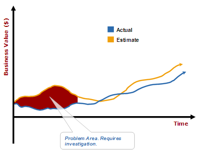
Analysis: Business Value Estimate Accuracy
Interpretation: This metric is used to validate the accuracy of the Business Value instrumentation processes, in addition to identifying potential flaws in the IT strategy. If large gaps are observed between estimates and actual results, then either the estimation process is inadequate, or execution is poor and there is a problem with the IT strategy.
Purpose: This metric charts the current percentage of business value realized through the service catalog.
Computation: This metric simply computes the total output business value from IT and the total business value output from the enterprise service catalog. The difference represents the amount realized by projects.
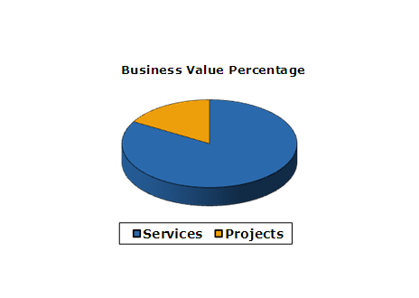
Analysis: Percentage of Business Value from Services
Interpretation: This metric provides a current snapshot of total business value realized by the business and the portion that shared services are responsible for.
Purpose: This metric charts the current percentage of business value realized through the service catalog, separated by category.
Computation: This metric simply computes the total output business value from IT and the total business value output from the enterprise service catalog. The difference represents the amount realized by projects. The enterprise service catalog’s portion of the business value is broken out by business value category.
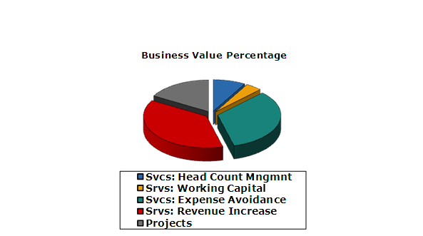
Analysis: Percentage of Business Value from Services (by Category)
Interpretation: This metric provides a current snapshot of total business value realized by the business and the portion that shared services are responsible for by category. It will help identify any long term bias towards a particular category.
Purpose: This metric identifies the best services with respect to total generated IT Business Value.
Computation: This metric simply examines the total net business value of each service in the enterprise service catalog and identifies the five services that have generated the most business value.
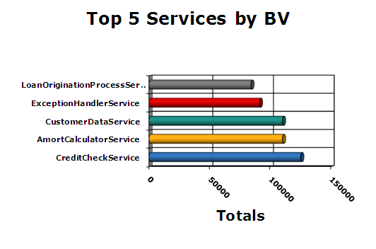
Analysis: Top 5 Services by Net Business Value
Interpretation: This metric identifies the top five services in the enterprise. Sometimes it is worth having a look at the reason why these services are successful, as they represent examples to build from.
Purpose: This metric identifies the best projects with respect to total generated IT Business Value. The rolled-up data indicates that the business value (and costs) from the services it consumes is pulled forward as part of the project’s business value data.
Computation: This metric simply examines the total rolled-up business value of each project in the enterprise and identifies the five projects that have generated the most rolled-up business value.
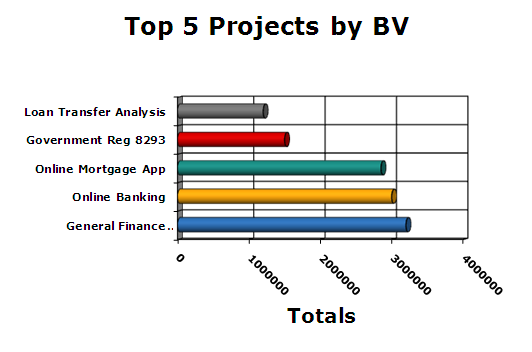
Analysis: Top 5 Projects by Rolled Up Business Value
Interpretation: This metric identifies the top five projects in the enterprise. Sometimes it is worth having a look at the reason why these projects are successful, as they represent examples to build from.
Purpose: This metric identifies the worst services with respect to total generated IT Business Value.
Computation: This metric simply examines the total net business value of each service in the enterprise service catalog and identifies the five services that have generated the least business value.
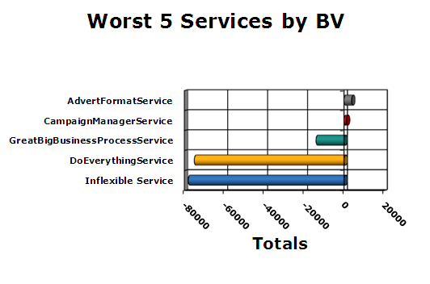
Analysis: Worst 5 Services by Net Business Value
Interpretation: This metric identifies the worst five services in the enterprise. Sometimes it is worth having a look at the reason why these services were not as successful as others, as they may identify problems in the IT strategy.
Purpose: This metric identifies the worst projects with respect to total generated IT Business Value. The rolled-up data indicates that the business value (and costs) from the services it consumes is pulled forward as part of the project’s business value data.
Computation: This metric simply examines the total rolled-up business value of each project in the enterprise and identifies the five projects that have generated the most rolled-up business value.
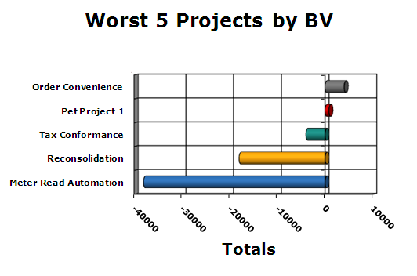
Analysis: Worst 5 Projects by Rolled Up Business Value
Interpretation: This metric identifies the worst five projects in the enterprise. Sometimes it is worth having a look at the reason why these projects were not as successful as others, as they may identify problems in the IT strategy.
At the beginning of each project, you should estimate the business value that it is expected to deliver. This estimate is an important input to the project justification and prioritization process.
During “Establish the Criteria and Foundation for Measuring Business Value," all the business value criteria that should be considered for business value estimation have been documented. During “Establish a Standard for Estimating Business Value for Projects," the processes and standards on how to estimate the business value for your project have been documented. Both these are important inputs to ensure a consistency in the way projects are estimated with respect to cost and benefits. That way, the enterprise is better able to look at the set of proposed projects in a more level playing field, rather than being simply swayed by the negotiation skills that one or more organizations may have over others.
Therefore, you should ensure that you follow the standard process as documented, and estimate the business value related to the given business value categories.
View the “Example: Project Business Value Estimate” on how such a project business value estimate may look.
When a project has been justified and you have determined what business value categories are relevant for the project, you need to establish a business value baseline to be able to measure the actual business value the project has provided at the end of the project, or on a longer term. This is necessary to verify whether the expected business value actually has been reached.
Earlier, you have established some Business Value Baseline Standards on how business value measurement baselines can be determined in various types of scenarios. Review this as an aid to find the best approach on how to determine the baseline for your project.
How to determine the business value baseline is dependent on what kind of business value categories are relevant for your project. How the baseline can be determined is also dependent on what kind of business value categories you are dealing with. Some data you will need to collect manually, while other data can be obtained automatically. It is recommended that wherever possible that the method used to determine the business value baseline is as similar as possible that will be used for actual measurements after the project or services have been implemented. This is to ensure that the data that is compared is as similar as possible.
When you have determined how the business value should be measured for your project and services, you need to determine how the required data should be collected, and used for measurement.
You have earlier determined the required Conceptual Business Value Instrumentation Data, and the SOA Business Value Metrics.
Here, you determine how to actually collect the instrumentation data, and how the measurements should be implemented as part of the project. It is recommended to automate as much as possible to ease to business value measurements reporting process.
If the project is expected to have a business value impact related to already existing areas, without directly changing those areas, you should consider implementing the data collection and related metrics even before the project starts. If you do this, you can also use this as part of the baseline measurement in order to provide the best possible baseline with which to compare.
Some organizations only estimate business value for the purpose of prioritizing projects, and do not bother to measure or validate the actual results after the project is actually deployed. Typically this is because measuring actual results on a project by project basis can be difficult. Further, at a minimum, the estimates do provide a good basis for the business value achieved not only through project delivery, but also through the use of an effective SOA. However, without validation there is no way to really understand the true business value achieved through the IT strategy, nor is there a way to determine if the business value analysis process is working effectively.
Where possible, the collection of measurement data should be automated as part of the project and service delivery. In some cases, such as with employee productivity, it will be virtually impossible to measure the results through automation. In these cases, the mechanisms used to validate results should be similar, if not identical, to the procedures used to measure the baseline. This practice ensures as much accuracy in the data used for analysis.
There will also be data that should be validated in a cyclical fashion, such as every six months, or yearly. This data is used to understand the change in business value generated over time by each solution, in addition to validating the short term estimates (Year 1, Year 2, Year 3, etc) provided during the estimation process. The ongoing measurement of business value also provides useful information when looking at updating or retiring existing solutions.
An example of the actual data collected for the unsuccessful credit scoring compliance example presented earlier is provided below:
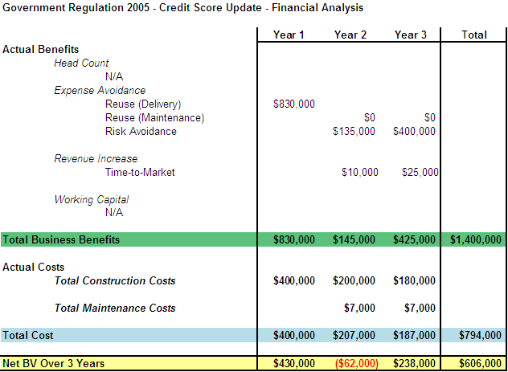
Example: Actual Business Value Measurement
When looking at the actual measured results versus the estimates, it is important to look for major gaps in the estimates, versus the actual results. These gaps, either positively or negatively, may indicate that there is a problem with the overall business value analysis processes, as they indicate that either the estimation process or actual measurement process may be flawed. Further, gaps identified in the measured versus estimated data may also signify SOA maturity based problems.
For instance, we will take a look at the credit scoring example which lacked the implementation of a service versioning strategy. The difference between actual measured results and estimate are included in the figure below:
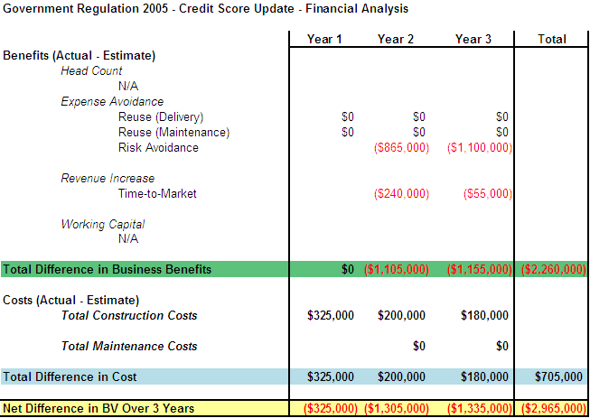
Example: Business Value Actual vs. Estimate Comparison
As illustrated above, it is clear that the actual results are nowhere near the estimate. In fact a difference of overall net business value of $2,965,000 is observed. As previously identified the problem’s root cause was based in the organization’s overall SOA adoption strategy. In this case, a very important SOA fundamental was overlooked, and the organization was not able to respond to the change effectively, even though the original intent of the SOA was to accommodate this type of situation. In this scenario, IT will more than likely receive a pie in the face, and will have most certainly deserved it. However, their most likely excuse will be that SOA is not at all what it is cracked up to be.
1 |
Sward, David, 2006. Measuring the Business Value of Information Technology: Intel Press. |
This book provides a good foundation for estimating and measuring business value from IT solutions. However, it does not consider the nuances of utilizing a SOA approach. Extending the method for SOA is the primary subject of this section in addition to the next six sections. |
There are no templates available to assist with this technique.
This technique is recommended for use in the following OUM tasks:
| Task | Usage |
|---|---|
| This technique assists in understanding the role instrumentation can play in information gathering for the purpose of making improved business decisions, as well as to in measuring the amount of business value generated through the IT strategy. | |
| This technique assists in understanding the role instrumentation can play in information gathering for the purpose of making improved business decisions, as well as to in measuring the amount of business value generated through the IT strategy. |
Use the following criteria to check the quality of this technique:

Copyright © 2006, 2016, Oracle and/or its affiliates. All rights reserved.